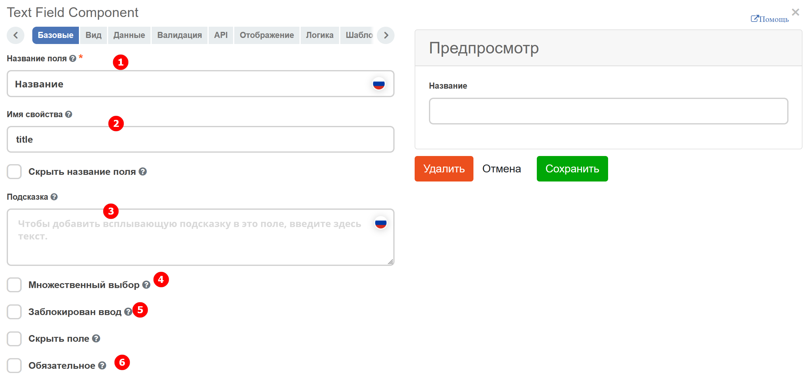
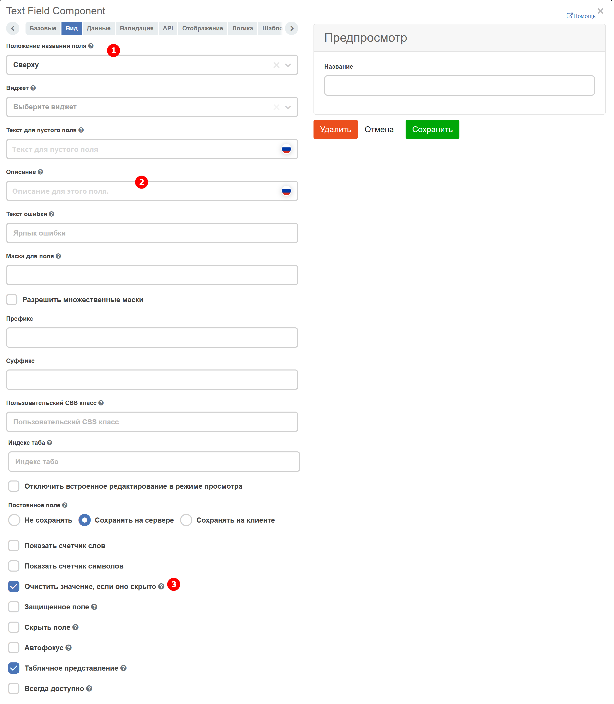
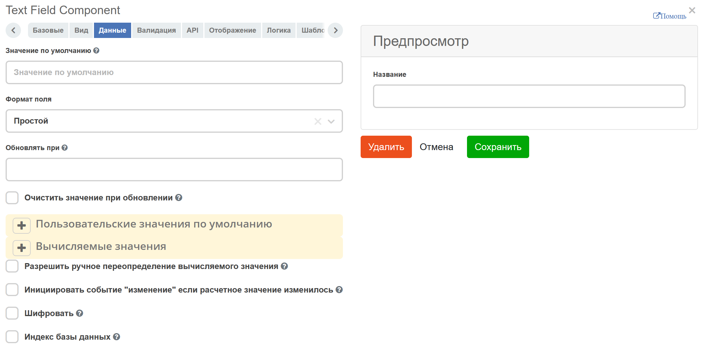
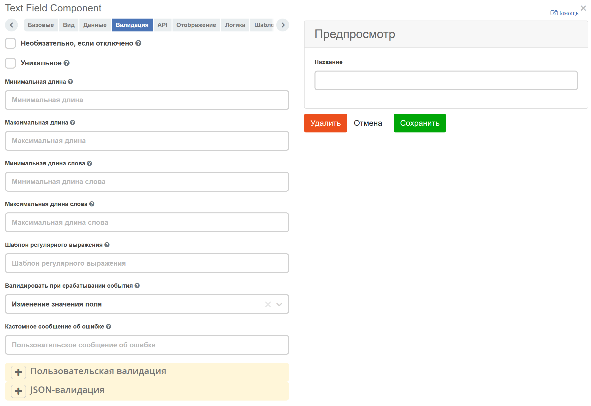
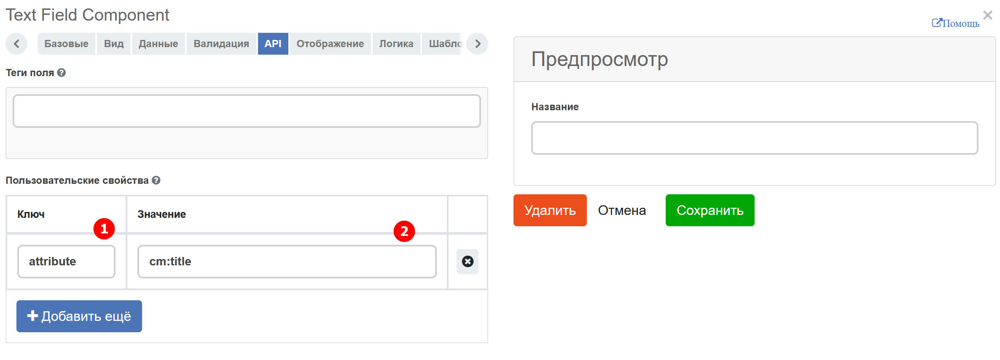
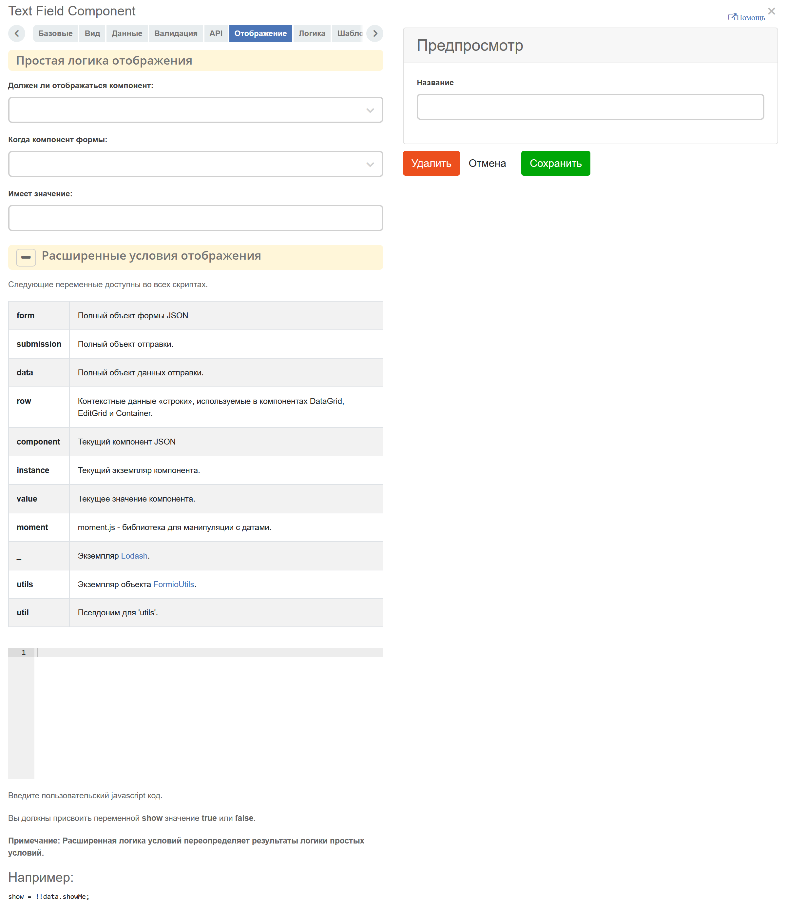
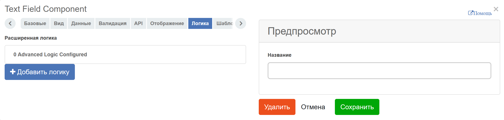
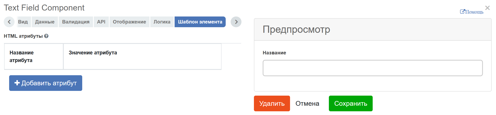

Конструктор форм
Общее описание
Конструктор форм позволяет моделировать формы в специальном дизайнере, можно настроить какие данные будут отображаться на форме, как они будут расположены, какие поля обязательны для заполнения, какие доступны только для чтения.
Так же можно настроить видимость полей, определить действия, которые выполняются при взаимодействии пользователя с элементами на форме.
Добавление компонента формы
Каждая новая форма начинается с автоматически добавленных кнопок и текстового поля, могут быть удалены или отредактированы по мере необходимости.
{kind=link}
Чтобы добавить компонент в форму, перетащите компонент из левого столбца в нужное место в форме:
{kind=link}
Редактирование компонента формы
Чтобы изменить компонент формы, наведите указатель мыши на компонент и щелкните значок шестеренки - откроется форма настроек для компонента.
{kind=link}
Общие настройки компонентов
Ниже приведен список общих настроек, которые присутствуют в большинстве компонентов.
Настройка компонентов
Основные вкладки, используемые для настройки:
Базовые. Хранит в себе основные, используемые чаще всего, настройки.

{kind=link}
п/п |
Наименование |
Описание |
|---|---|---|
1 |
Название поля |
имя компонента, как оно будет отражаться на форме. |
2 |
Имя свойства |
имя свойства из типа данных
При вводе имени свойства появляется выпадающий список атрибутов типа данных, для которого форма создается (при наличии частичного совпадения имен). Это позволяет понять, какие имена уже заняты, чтобы не привести к ошибке при создании или редактировании формы.
|
3 |
Подсказка |
подсказка, которая отображается при наведении курсора на знак вопроса возле поля, если необходимо. |
4 |
Множественный выбор |
отвечает за возможность множественного выбора (нужно для выбора из списка, журнала, или оргструктуры). |
5 |
Заблокирован ввод |
отключает возможность ввода данных в компонент. |
6 |
Обязательное |
обязательность заполнения поля. |
{kind=link}
Вид. Хранит в себе настройки для отображения. Для базовой настройки нужны:

{kind=link}
п/п |
Наименование |
Описание |
|---|---|---|
1 |
Текст для пустого поля |
подсказка, которая отображает до начала заполнения поля. Используется в основном для текстовых полей. |
2 |
Описание |
подсказка, которая отображается на форме всегда, в отличие от Placeholder, если необходимо. |
3 |
Очистить значение, если оно скрыто |
отвечает для очистку данных в компоненте, когда она скрыта. |
Данные. Отвечает за автоматическое заполнение поля данными. В списках, есть возможность заполнить список статическими, или полученными из асинхронного запроса данными.
Валидация. Отвечает за проверку правильности заполнения поля. Поддерживает как простые проверки (проверки длины введенной строки или принятия конкретного значения), так и сложные.
API. Хранит в себе ключ и атрибут для корректного сохранения данных. Необходимо заполнить следующие поля:

{kind=link}
{kind=link}
{kind=link}
В поле Ключ ввести строку attribute, а в Значение ввести данные как в заголовке %prefix%_%localName%. Например: idocs:initiator
Отображение. Отвечает за настройку отображения компонента. Поддерживает как простую логику, например, сопоставление значения поля и отображения при совпадении, так и сложную.
Логика. Пользовательская логика. Поддерживает автовычисления большого количества свойств компонента.
Шаблоны элемента. Отвечает за дополнительные атрибуты, которые могут быть добавлены в форму.

{kind=link}
{kind=link}
{kind=link}